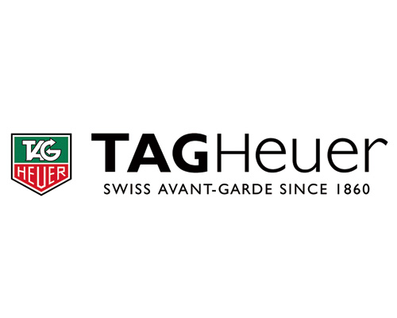
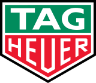

태그호이어 TAG Heuer
태그호이어(TAG Heuer)는 1860년 에두아르 호이어가 설립한 스위스 고급 시계 제조사이다.
최종 업데이트

태그호이어는 어떤 브랜드인가
태그호이어는 1860년 스위스 쥐라 산악지대 생티미에에서 스무 살의 에두아르 호이어가 연 시계 공방에서 출발했다. 크로노그래프와 모터스포츠 계측 기술을 무기로 성장했고, 1985년 그룹 TAG가 경영권을 인수하며 지금의 이름을 얻었다.
1999년에는 LVMH 산하로 편입돼 글로벌 럭셔리 자본의 유통·마케팅 역량과 결합했다. 현재 약 100개 직영 부티크 네트워크를 운영하며 연 약 38만 개 안팎의 시계를 판매하는, 접근 가능한 럭셔리 워치의 대표 주자다.
태그호이어는 어떻게 봐야 할까
같은 스위스 시계라도 로렉스·오메가가 자산가치와 무브먼트 권위로 정점을 지킨다면, 태그호이어는 100만원대 초반에서 시작하는 진입 가격과 카레라·모나코로 대표되는 레이싱 헤리티지로 차별화한다. 핵심 전략은 시계의 가치를 자동차 경주·속도·정신력이라는 서사에 묶는 것이다.
2025년 로렉스를 밀어내고 포뮬러1 공식 타임키퍼로 복귀한 사건이 결정적인데, LVMH가 10년간 1조원이 넘는 규모를 베팅한 이 파트너십은 브랜드를 다시 모터스포츠 정상으로 올려놓았고 시즌 개막 이후 매장 방문을 두 자릿수로 늘렸다. 한국 독자에게 태그호이어는 첫 명품 시계, 즉 200만~300만원대에서 스위스 정통 크로노그래프를 경험하는 출발점으로 읽히며, 백화점과 면세점을 축으로 한 유통이 이 진입 포지션을 뒷받침한다.
태그호이어는 어떻게 시작되고 성장했나
19세기 중반 스위스 시계산업이 가내 수공에서 정밀 산업으로 도약하던 시기, 에두아르 호이어는 1860년 생티미에에서 회중시계 공방을 열었다. 그는 1869년 용두 와인딩 특허, 1882년 크로노그래프, 1887년 오실레이팅 피니언 특허로 계측 시계의 기술 토대를 닦았고, 회사는 비엔으로 옮겨 한 세기 넘게 자리 잡았다.
첫 전환점은 1963년 잭 호이어가 디자인한 카레라와 1969년 모나코다. 특히 모나코는 세계 최초의 사각 방수 자동 크로노그래프였고, 1971년 영화 르망에서 스티브 매퀸이 착용하며 아이콘이 됐다.
두 번째 전환점은 1985년 테크닉 다방가르드(TAG)의 경영권 인수, 그리고 1999년 LVMH 편입이다. 이 과정에서 브랜드는 스위스를 넘어 미국·일본·아시아로 유통망을 넓히며 글로벌 럭셔리 시장의 정식 일원이 됐다.
태그호이어의 브랜드 아이덴티티는 무엇인가
태그호이어의 정체성은 1991년 등장한 선언 'Don't Crack Under Pressure'에 압축된다. 압박 속에서도 무너지지 않는 정신력, 대담함, 개척정신이 핵심 가치다.
비주얼 아이덴티티는 방패형 로고와 레드·블랙 액센트, 스포티한 다이얼 구성으로 속도감과 정밀함을 드러낸다. 타깃은 모터스포츠·테니스·골프 같은 경쟁적 스포츠에 끌리는 야심 찬 도전자, 그리고 정통 럭셔리에 처음 진입하는 젊은 소비자층이다.
브랜드 보이스는 절제됐지만 도전적이며, 챔피언과 레이서를 앰배서더로 내세워 성취와 용기의 서사를 일관되게 전한다.
태그호이어의 대표 제품과 서비스는 무엇인가
제품군은 크로노그래프와 다이버, 스포츠 워치를 중심으로 한다. 시그니처는 레이싱 헤리티지의 카레라, 사각 케이스의 모나코, 다이빙용 아쿠아레이서, 그리고 모터스포츠 감성의 포뮬러1이다.
가격은 포뮬러1·아쿠아레이서 기본형이 200만원 안팎에서 시작해, 복잡한 크로노그래프와 모나코 칼리버는 수백만원대에 이른다. 한국에서는 공식 부티크와 백화점, 면세점, 공식 온라인 채널을 통해 판매된다.
태그호이어는 지금 어떤 상태인가
모회사는 LVMH 그룹이며 시계·주얼리 사업부에 속한다. 본사와 제조 거점은 스위스에 있다.
CEO는 2024년 9월 취임한 앙투안 팽이다. 2024년 말 기준 직영 부티크는 약 100개이며, 전 세계 백화점·면세점·리테일 파트너망을 함께 운영한다.
매출은 LVMH가 브랜드별 수치를 분리 공시하지 않아 공식 확정치는 미공개이나, 업계 추정으로 2025년 약 7억 2천만 스위스프랑, 연간 판매량 약 38만 개로 스위스 시계 시장의 약 2%를 차지한다. 임직원 수와 진출 국가 수의 정확한 공식 수치는 미공개.
태그호이어 연혁 — 주요 사건은 언제였나
태그호이어 로고는 어떻게 변해왔나
대표 로고대표 브랜드 마크
BI/CI 아카이브보관 이미지 2
BI/CI 아카이브 3보관 이미지 3자주 묻는 질문
태그호이어는 어느 나라 브랜드인가요?
태그호이어는 스위스의 패션·럭셔리 브랜드입니다.
태그호이어는 언제 설립되었나요?
태그호이어는 1860년 설립되었습니다.
태그호이어의 브랜드 아이덴티티는 무엇인가요?
태그호이어의 정체성은 1991년 등장한 선언 'Don't Crack Under Pressure'에 압축된다.
태그호이어의 대표 제품은 무엇인가요?
제품군은 크로노그래프와 다이버, 스포츠 워치를 중심으로 한다.
태그호이어는 현재 어떤 상태인가요?
모회사는 LVMH 그룹이며 시계·주얼리 사업부에 속한다.
태그호이어의 본사는 어디에 있나요?
태그호이어의 본사는 라쇼드퐁에 있습니다(위키데이터 기준).
태그호이어의 모기업은 어디인가요?
태그호이어의 모기업은 LVMH입니다(위키데이터 기준).
출처와 검증
태그호이어 관련 참고: 공식 웹사이트 · 위키데이터 Q645984 · 한국어 위키백과 · 영어 위키백과. 브랜드명은 한글과 원어를 함께 표기하되 데이터에 없는 표기는 만들지 않습니다. 기원 국가·설립연도는 검수된 정의문에서 확인된 값을 우선하고, 없을 때만 공식 웹사이트 URL이 일치하는 위키데이터 개체의 값을 씁니다. 위키데이터 값은 2026-09-07 기준입니다.